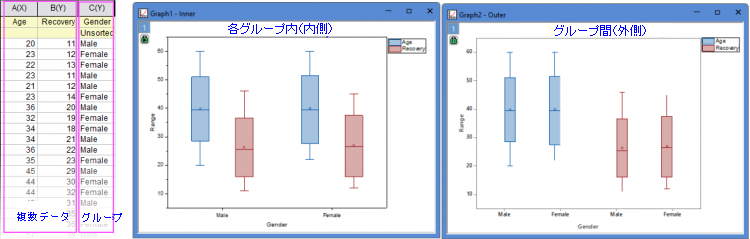
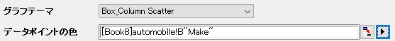

| データ列
|
この欄は、入力データを指定するのに使用します。
|
| プロットをグループ化
|
この項目に表示ボックスと5つのボタン のついたツールバーがあります。 のついたツールバーがあります。
- 表示ボックス
- 選択されたグループ範囲が表示されます。グラフを作図する場合、<なし>以外を選択しなければなりません。このボックスに表示されるデータセットの名前の順番はグループ化するのに使用する順番です。つまり、入力データは最初のデータ範囲でグループ化され、それぞれのサブ範囲が2番目のデータ範囲でグループ化されます。
- 追加ボタン

- このボタンをクリックしてコンテキストメニューから1つの列選択します。あるい列の選択をクリックして列ブラウザを開き、表示ボックスにグループ化する範囲として表示します。最大5つのグループ範囲を追加できます。
- 削除ボタン

- 表示ボックスから選択したデータ範囲を削除します。このボタンはグループ列ボックスで1つ以上のデータ範囲を選択しているときに利用可能です。
- 上へ移動ボタン

- 表示ボックスで選択したデータ範囲を上に移動します。グループ順序を変更できます。
- 下へ移動ボタン

- 表示ボックスで選択したデータ範囲を下に移動します。グループ順序を変更できます。
- すべて選択ボタン

- グループ列のすべてのデータ範囲を選択します。
|
| 複数データ
|
データ列で複数の入力列が選択されている場合、このオプションを使用して、データの配置方法を決定できます。
- 同じグラフに重ねる：同じグラフページ上のすべてのデータをオーバーレイしたプロットとして作図します。
- 同じグラフ内でレイヤを分ける：これらのデータを同じグラフページ上の別々のレイヤに個別にプロットします
- グラフを分ける：これらのデータを別々のグラフページにプロットします
|
| データを分割
|
複数データがグラフを分けるに設定されていない場合、このコントロールが表示されます。列ラベル行を選択して、複数のデータを異なるデータグループに分割することができます。
|
| 複数データグループ
|
データを分割で列ラベル行を選択した場合、データグループの配置方法を個別のレイヤまたはグラフを分けるから選択できます。
|
| データスケーリングレベル
|
グループを持つ複数のデータがある場合、このオプションを使用して、データ変数情報をグループの内側またはグループの外側に置くことができます。

|
| Yを共有
|
このオプションは、複数データが同じグラフ内でレイヤを分けるに設定されている場合にのみ表示されます。これは異なるレイヤ間でYスケールを共有するために使用されます。
|
| 水平パネルに分割
|
このチェックボックスをオンにすると、別のグループ化列を指定して、横方向にパネルを分割できます。各グループ値に対して、個別のグループ化ボックスチャートが表示されます。
垂直パネルに分割にチェックが付いていない場合、区分の折り返しが有効で目盛やラベルは、左右交互に表示されるのが初期設定です。
複数の列でグループ化している場合でも、パネル情報ラベルは1行のみが上部に表示されます。パネルのバナー文字列としてすべての因子（グループ値）がカンマ区切りで表示されます。
|
| 垂直パネルに分割
|
このチェックボックスをオンにすると、別のグループ化列を指定して、縦方向にパネルを分割できます。各グループ値に対して、個別のグループ化ボックスチャートが表示されます。
水平パネルに分割にチェックが付いていない場合、区分の折り返しが有効で目盛やラベルは、左右交互に表示されるのが初期設定です。
複数の列でグループ化している場合でも、パネル情報ラベルは1行のみが上部に表示されます。パネルのバナー文字列としてすべての因子（グループ値）がカンマ区切りで表示されます。
|
| ページの分割
|
このチェックボックスをオンにすると、別のグループ化列を指定して、入力データを分割し、異なるグラフページにグループ化されたチャートを作成できます。各ページには、同じページ関連グループに属する列だけがプロットされます。ページに関連するグループ情報は、レイヤータイトルにカンマ区切りで表示されます（複数因子がある場合）。レポート用のグラフシートには、すべてのページが一覧表示されます。
|
| グラフテンプレート
|
グラフにフォーマットや設定を適用するグラフテンプレートを選択します。デフォルトでは、自動にチェックを入れると組み込みのテンプレートgbox.optuが選択されます。
|
| グラフテーマ
|
グループ化ボックスプロットの組み込みグラフテーマをリストから選択します。
|
| データポイントの色
|
グラフテーマにデータポイントの表示 (Box_Column_Scatter など) を含む場合は、データポイントを列の値で色分けするためのデータポイントの色が追加されます。オプションです。

|
| 色の増分
|
グループ化ボックスに色の増分リストを使用して色を付ける方法をサブグループ内またはサブグループ間から指定します。
|
| 目盛ラベルの追加情報
|
各表記が別々の表の行として表示されます。これらの追加情報は、グループ情報の表の行の後に表示されます。
|
| 出力先
|
グラフを出力する場所として、別のグラフウィンドウまたはレポートシート内に埋め込む場所を指定します。
|
| プロットデータ出力
|
計算したデータの出力先を指定します。
|
| グラフ出力
|
結果グラフを出力するワークシートを指定します。
|